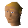

Black platebody
| Config name | black_platebody |
| Item id | 1125 |
| Value | 3840 gp |
| Weight | 22lb |
| Members | No |
| Tradeable | Yes |
| Stackable | No |
| Equip slot | torso |
| Options | Wear |
| Category | armour_body |
| Defined in | scripts/skill_combat/configs/melee/platebodies.obj |
| Equipment stats | Magic att -30, Range att -10, Stab def 41, Slash def 40, Crush def 30, Magic def -6, Range def 40 |
Black platebody
Provides excellent protection.
Sold at
| Shop | Shopkeeper | Stock |
|---|---|---|
| Zenesha's Plate Mail Body Shop. | 1 | |
| Horvik's Armour Shop. |  Horvik | 1 |
Quests
Referenced in scripts
scripts/_test/scripts/debug/debug_quests.rs2scripts/levelrequire/scripts/tier10.rs2scripts/levelup/scripts/levelup_unlocks_defence.rs2scripts/minigames/game_trail/scripts/easy/trail_clue_easy_reward.rs2scripts/quests/quest_hero/scripts/quest_hero.rs2